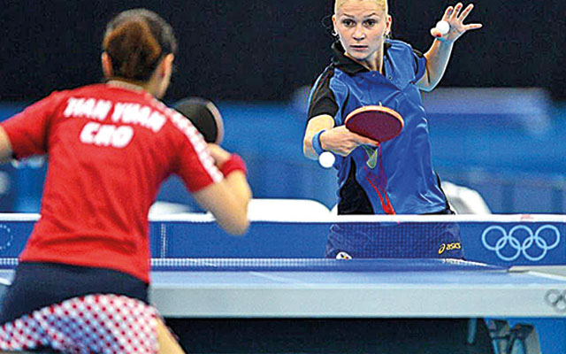
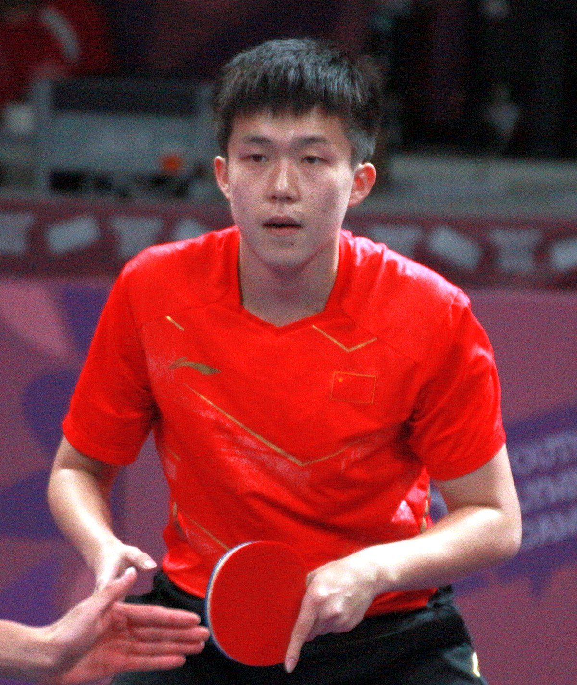

O tênis de mesa, também conhecido como pingue-pongue, é o jogo em que duas pessoas usam raquetes de madeira para passar uma bolinha de um lado a outro de uma rede instalada em uma mesa. O nome pingue-pongue deve-se ao barulho que a bola faz ao bater na raquete e na mesa.
O tênis de mesa é derivado do tênis de grama e foi inicialmente jogado como entretenimento após jantares entre famílias inglesas de classe alta, que usavam tudo o que encontravam como equipamento. Na época, colocavam livros sobre uma mesa para servir de rede, as tampas das caixas de charutos como raquetes e uma rolha arredondada de garrafa de champanhe como bola. Felizmente, os equipamentos de tênis de mesa foram evoluindo com o tempo e, em 1926, foram organizadas competições em Berlim e Londres, dando origem aos primeiros campeonatos mundiais que aconteceram em Londres naquele mesmo ano. Extremamente popular na Ásia, o tênis de mesa é jogado por mais de 40 milhões de pessoas, tornando-o um dos esportes mais populares do mundo.
O Esporte é jogado em uma mesa dividida em duas metades por uma rede no meio, utilizando uma bola extremamente leve e sofisticadas raquetes ou “paddles” compostas por uma lâmina de madeira revestida com uma superfície de borracha em ambos os lados. As partidas de simples são no formato de melhor de sete sets, com o primeiro jogador a alcançar 11 pontos (por uma margem de dois pontos) vencendo cada set. As partidas de equipe são quatro jogos de simples e uma de duplas, cada uma no formato de cinco sets. Cada equipe é composta por três jogadores e os confrontos terminam quando uma equipe vence três partidas. Nas duplas, os jogadores se revezam para acertar a bola.
| Nome | Ano | Local |
| Long Ma | 2020 | Tóquio |
| Long Ma | 2016 | Rio de Janeiro |
| Jike Zhang | 2012 | Londres |
| Lin Ma | 2008 | Pequim |
| Seung Min Ryu | 2004 | Atenas |
Wang Chuqin
O jogador que está no topo do ranking mundial da Federação Internacional de Tênis é o Wang Chuqin, ele tem 24 anos e é um jogador profissional de tênis de mesa chinês.
As disputas do tênis de mesa nos Jogos Olímpicos 2024 acontecem entre os dias 26 de julho e 11 de agosto, na Arena Paris Sul.
O cronograma completo do tênis de mesa nos Jogos Olímpicos de Paris é o seguinte (horários de Brasília):
Sábado, 27 de julho de 2024
Domingo, 28 de julho de 2024
Segunda-feira, 29 de julho de 2024
Terça-feira, 30 de julho de 2024
Quarta-feira, 31 de julho de 2024
Quinta-feira, 1 de agosto de 2024
Sexta-feira, 2 de agosto de 2024
Sábado, 3 de agosto de 2024
Domingo, 4 de agosto de 2024
Segunda-feira, 5 de agosto de 2024
Terça-feira, 6 de agosto de 2024
Quarta-feira, 7 de agosto de 2024
Quinta-feira, 8 de agosto de 2024
Sexta-feira, 9 de agosto de 2024
Sábado, 10 de agosto de 2024